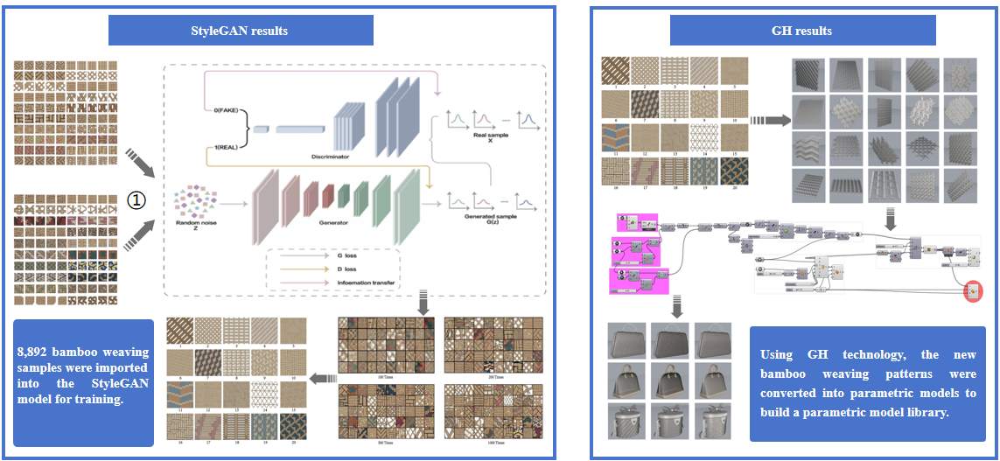
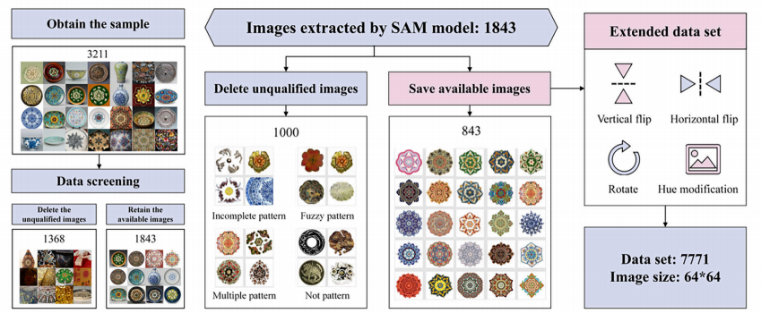
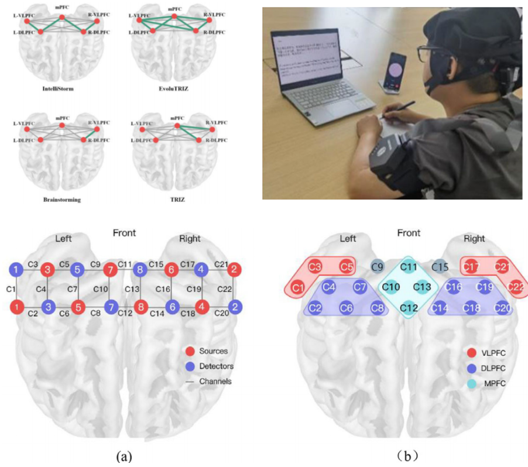
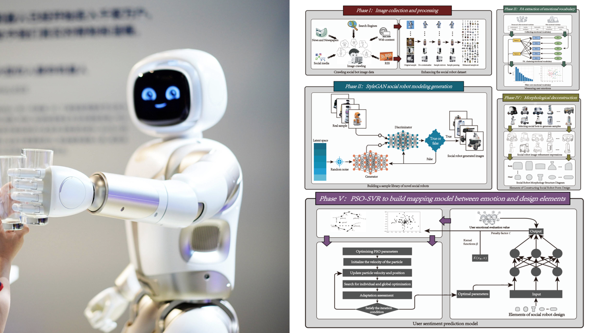
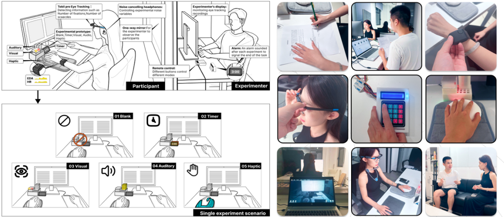
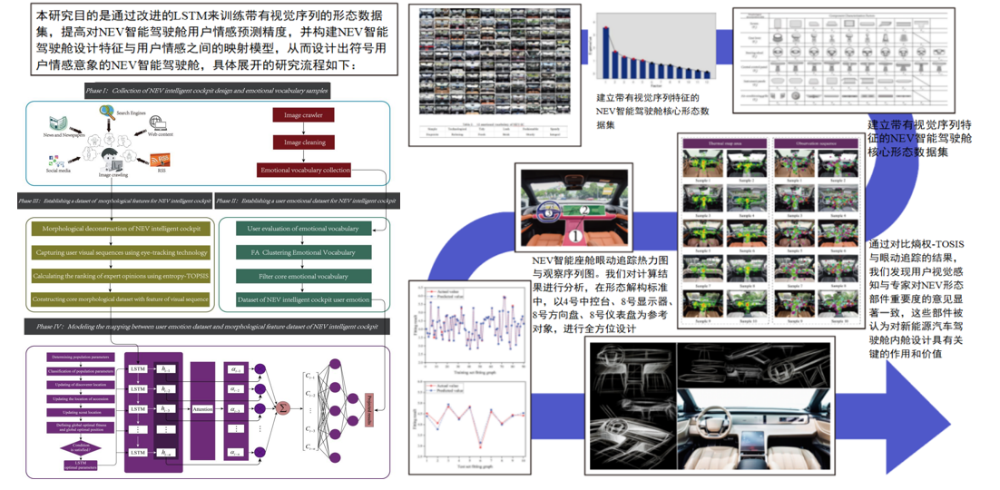
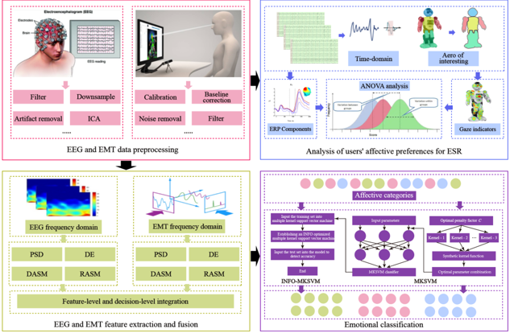

I am a PhD candidate at Beijing Institute of Technology (BIT) and a CSC Joint PhD student at Nanyang Technological University (NTU). My research stands at the dynamic intersection of Human-Computer Interaction (HCI) and Intelligent Design. I am particularly dedicated to developing multimodal HCI/HRI systems and constructing robust psychophysiological computing models. By leveraging affective computing and physiological data, I aim to bridge the gap between humans and machines, creating more empathetic, adaptive, and intelligent interactive systems for the future.
Research Interests:

Journal of Engineering Design 37 (2), 529-550, 2026

npj Heritage Science 13 (1), 639, 2025


Journal of Engineering Design 36 (1), 160-190, 2025

Proceedings of the 2025 CHI Conference on Human Factors in Computing Systems, 2025

Advanced Engineering Informatics 61, 102557, 2024

Advanced Engineering Informatics 62, 102956, 2024
* View all research on Google Scholar.